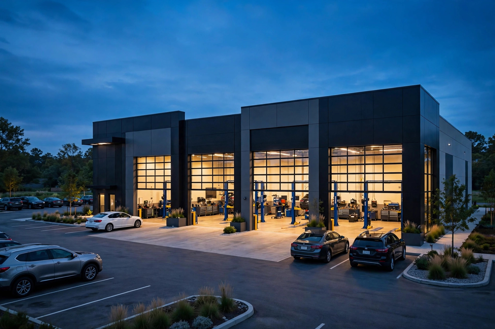

Car trouble ends at the Apex
From oil changes to engine repair, our technicians diagnose the real problem, quote you an upfront price, and fix it right the first time. All makes and models welcome.
Complete car care, one shop
Every service below is performed in house by technicians who diagnose before they replace. Click any service for symptoms, our process and straight answers.

Lube, Oil and Filter
Full service oil changes with quality oil and a new filter, plus a courtesy inspection at every visit.
Learn more →
Diagnostic Services
Computer diagnostics and hands on testing that pinpoint warning lights, strange noises and performance issues.
Learn more →
Electrical Diagnostic
Wiring, sensors, modules and parasitic drain testing by technicians who read wiring diagrams for a living.
Learn more →
Fuel Filter Replacement
Fuel filter replacement that protects injectors and restores proper fuel pressure.
Learn more →
Preventative Maintenance
Factory scheduled maintenance, fluid services and full vehicle inspections that keep you ahead of breakdowns.
Learn more →
Brake Replacement and Repair
Pads, rotors, calipers and full brake system repair with proper bedding and a road test on every job.
Learn more →
Engine Repair and Maintenance
Engine diagnostics, tune ups, gaskets, seals and mechanical repairs for all makes and models.
Learn more →
Coolant Flush
Complete cooling system flush with fresh antifreeze mixed for Canadian winters, plus pressure testing.
Learn more →
Ball Joint Replacement
Ball joint and control arm replacement with proper torque specs and a road test on every job.
Learn more →
Fuel Pump Replacement
Fuel pump diagnosis and replacement with fuel pressure testing before and after the job.
Learn more →
AC Service and Replacement
AC recharge, leak detection, compressor and component replacement with proper evacuation and testing.
Learn more →
Wheel Bearings Replacement
Wheel hub and bearing replacement that eliminates humming, grinding and play at the wheel.
Learn more →
Strut Assembly Replacement
Strut and shock replacement, including complete quick strut assemblies, for safe handling and comfort.
Learn more →
Oxygen Sensor Replacement
O2 sensor diagnosis and replacement that restores fuel economy and clears emissions codes.
Learn more →
Battery, Alternator and Starter Check
Complete starting and charging system testing: battery, alternator, starter, cables and parasitic drains.
Learn more →
CV Axle and Shaft Assembly Replacement
CV axle replacement for clicking on turns, torn boots and vibration under acceleration.
Learn more →
Ignition Coils and Spark Plugs Replacement
Spark plug and ignition coil service that cures misfires, rough idle and hesitation.
Learn more →
Engine and Transmission Mount Replacement
Motor and transmission mount replacement that eliminates clunks, vibration and harsh shifting feel.
Learn more →Why drivers call us the best car servicing shop in North York
Best is a big word, so here is what it means at Apex: every car servicing visit starts with real diagnosis, not guesswork. You get a written quote with parts and labour broken out before any work begins. Worn parts are saved for your inspection. Every repair is road tested before you pay.
That is why North York drivers trust us with oil changes, brake repair, engine diagnostics, AC service, suspension work and full preventative maintenance, and why drivers from Toronto, Mississauga, Scarborough, Etobicoke, Vaughan and Markham make the drive to our Dufferin Street shop.
- Car servicing for all makes and models, domestic, Asian and European
- Upfront pricing approved by you, never a surprise on the bill
- Quality parts that meet or exceed manufacturer specifications
- Open Monday to Saturday at 4544 Dufferin Street, North York
Areas we serve
Our North York shop welcomes drivers from across the GTA and Ontario:
The shop that shows its work
No jargon, no mystery charges, no parts you did not need. Just a clear explanation and a car fixed properly.
- Diagnose before we quote. Computer scans plus hands on testing, so you pay for the real fix, not guesses.
- Written upfront pricing. Parts and labour broken out, approved by you before a single bolt turns.
- We show you the old parts. Worn components are saved for your inspection, and measurements go in writing.
- All makes and models. Domestic, Asian and European vehicles, from oil changes to engine work.
- Road tested, every time. No car leaves until the repair is verified on the road.
From booking to back on the road
Book in seconds
Call, email or use the online booking form. Tell us your vehicle and the symptoms and we will confirm a time that suits you.
We diagnose first
Every repair starts with real testing: computer scans, measurements and hands on inspection. We find the actual fault before quoting.
You approve the price
You get a written quote with parts and labour broken out. Nothing happens until you say yes, and we explain every line.
We repair and road test
Quality parts go in, torqued to spec. Then we road test, verify the fix, and hand back a car that is ready for the road.
Drivers who found their shop
“Brought my SUV in for brakes after another shop quoted me a fortune. Apex measured everything, showed me the rotors, and did pads and machining for a fair price. Pedal feels brand new. These guys are honest.”
“My check engine light had been on for months and two shops just cleared the code. Apex actually diagnosed it, a bad oxygen sensor, and fixed it the same day. Fuel economy is back to normal. Finally a shop that finds the real problem.”
“AC died in the middle of July. They found the leak, showed me the dye, replaced the condenser and had me blowing ice cold by the afternoon. Fair price, no upsell, I will be back for all my maintenance.”
Right on Dufferin in North York
Drop by, call or book online. Free parking at the shop and a comfortable waiting area while we work.
4544 Dufferin Street, North York, ON M3H 5X2
Get directions
| Day | Hours |
|---|---|
| Monday | 9:00 AM - 5:00 PM |
| Tuesday | 9:00 AM - 5:00 PM |
| Wednesday | 9:00 AM - 5:00 PM |
| Thursday | 9:00 AM - 5:00 PM |
| Friday | 9:00 AM - 5:00 PM |
| Saturday | 10:00 AM - 3:00 PM |
| Sunday | Closed |
Common questions
Drivers across North York choose Apex Collision Center for honest car servicing: real diagnosis before any quote, written upfront pricing, quality parts, and every repair road tested. Visit us at 4544 Dufferin Street, call (289) 544-2727, or book online. We service all makes and models, Monday to Saturday.
We are at 4544 Dufferin Street in North York, Ontario, M3H 5X2, easy to reach from the 401 and Finch Avenue. Free parking is available right at the shop.
We are open Monday to Friday from 9:00 AM to 5:00 PM and Saturday from 10:00 AM to 3:00 PM. We are closed on Sundays.
Walk ins are welcome for inspections, diagnostics and quick services like oil changes and battery checks. For bigger repairs we recommend booking ahead so we can have the parts and a lift ready for you. Call (289) 544-2727 or use the booking form.
Your car deserves the Apex treatment
Call, email or book online. We will diagnose the issue, give you an upfront price, and get you back on the road with work done right the first time.